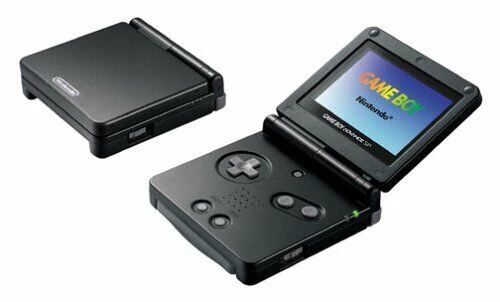

I had a black Game Boy Advance SP — either before, at the same time as, or after I had a GameCube (I really can't remember). But I poured so many hours into Pokémon FireRed. I never even beat it until I was 10 years old, with my cousin Carl's help. Charizard got us through the Elite Four. I probably started playing that game in 2004 and didn't beat the league until 2010.
The Game Boy Advance SP was amazing — I loved how you could connect it to the GameCube for additional content and multiplayer across so many games. I'm very happy to see how the SP has stuck around, and the modding scene for it is vibrant and enduring.
I have a few SPs, and I had a modded regular Advance and a Color, but sold them a bit ago. I'll eventually get my hands on my dream setup of four modded normal Game Boy Advances — later in life, when I make a good salary, haha.
That's all I'll write for the Game Boy Advance SP for now. It was awesome for its time.